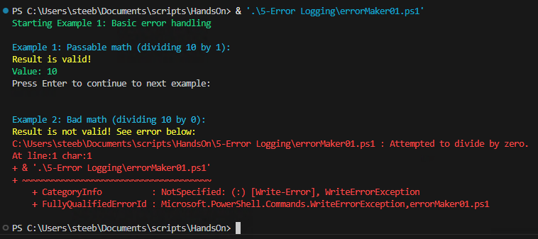
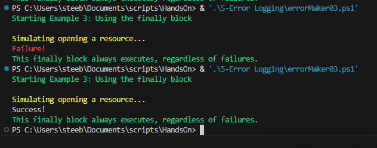

Try/Catch Statements
The simplest way to handle error catching is by using the try handler built into PowerShell. While you can can use an if loop to catch errors with additional logic, this handler is built-in to PowerShell and makes error handling dead simple. This is the basic structure of a try/catch statement:
Follow along and we'll go through a few different ways to use this as a comprehensive error-handling tool.
Basic Error Handling
We'll start with something basic. Go ahead and paste this code into a new PS1 file and and run it:
What is "" doing?
When you are producing console output for the user to read, you may want to simply insert a blank line. The most common-sense way to do this is to just put in a blank Write-Host line, but a quicker way is to simply put an empty pair of double quotes ("") on a line. It's just a formatting shortcut.
You should see some output similar to this:
Let's break down what we see here.
- We're using the
Write-Host "Some text" -ForegroundColor SomeColorto display output to the screen. - We then start our first
tryblock - simply attempting to divide 10 by 1, and save the value as$result - Our first
catchblock comes next -- but since the$resultis valid, we had no failures and we simply skip it - We then use
Read-Hostto progress the script when the user is ready. - Next, we have a very similar
trystatement -- however, this time we try the impossible: divide by zero. We also fail. - You'll see that as soon as we hit a snag and the
$resultbecomes invalid, we jump down to thecatchblock - we never see the"Result is valid!"message - Inside the
catchblock, we log a basic failure message, but then also useWrite-Errorto display$_-- which inside acatchblock will always contain the error message that produced it.
As you can see, this is a very useful statement - it simply allows code to jump to another place as soon as an error occurs. It will stop processing code and move onto the error handler. From there, we can determine how to handle the failure - we don't always need to exit the script entirely, but we may want to set some sort of variable that tells us to try something else or simply write an error message to a log.
Handling Multiple Error types
There are also occasions where it might be important to know why an error was generated, such as knowing whether a file doesn't exist, a drive letter doesn't exist, or we lack permissions to see the file. We can use multiple catch statements to sort through errors. In the code below, try commenting out different lines in the try block to the different errors you can generate.
If you try out all the different error messages, you'll get some output like this:

Using the finally block
You may not always want to finish execution just because the catch block has been called. In that case, we can use the final type of block for error handling, the finally block. Save and run the example below to see it in action. Try commenting out the throw line to see how it handles successful runs as well as failures.
throw-ing it all away
You can use the throw command to force an error. You may want to do this in the event that some piece of data isn't the way you want it to be, even if it technically didn't throw any errors. It can also be useful for simulations, such as this one!
If you try out both success and failure, you'll have output like this:
Bonus: Writing an Error Log
Seeing all of this in the console is nice - but you might want to refer to this later, especially if this is an automated task. If you'd like to generate a log file to view later, we can create a simple function to take care of that while also display some console output for us. Try out the following code to see it in action:
By tying in an if statement, we can even handle automated alerts when failures occur, or, as in our example, prompt the user to view the error log. All tied together, you can create an intuitive, useful logging system to see how your applications are working. As your programs get more and more complicated, good error logging will save tremendous amounts of frustration.
Conclusions
This lesson may have been a little less exciting than others, but it's an extremely useful bit of information to keep in your toolset while you develop your scripts and applications. Here are our main takeaways:
- Using
trystatements to execute code andcatchblocks to handle failures. - Failures inside of the
tryblock will cause an immediate jump down to thecatchblock - no additional code will be executed. - How to use multiple
catchblocks to sort through different types of error messages. - Using the
finallyblock to execute code regardless of the outcome of thetryblock. - Combining these types of error catching along with basic functions to generate error logs as well as informative console output.
Final Scripts
errorMaker.ps1
launcher.bat